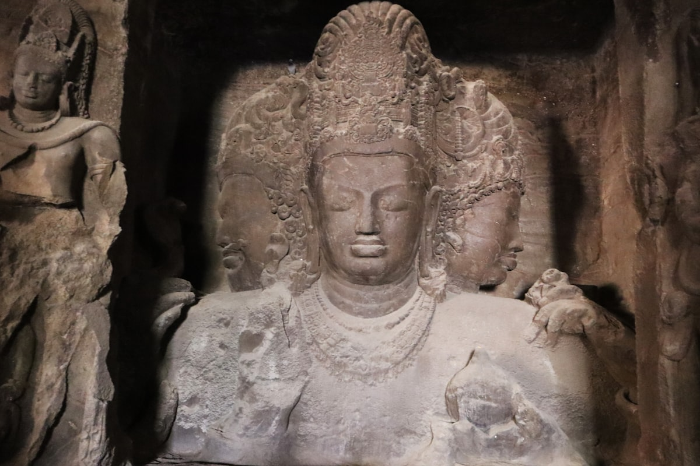

Elephanta Caves Tour
Across the harbour to the three faces of Shiva

The main cave at Elephanta has no doors. You walk in from full sun into a hall of stone columns, and for a moment you can't see much at all. Then your eyes adjust and the Trimurti comes out of the dark: three faces of Shiva, about six metres tall, carved around the 5th to 7th centuries. People have stood on this spot, doing what you're doing, for more than a thousand years.
The day starts at the Gateway of India. You board the ferry beneath the arch and spend about an hour crossing the harbour, gulls trailing the boat, the city thinning to a line behind you. The island's own name is Gharapuri; the Portuguese renamed it after a stone elephant they found on the shore. From the jetty it's about 120 steps up to the caves, past stalls selling hats and carvings — keep your bag zipped; the monkeys here have quick hands.
Inside, Pooja walks you round the panels at your pace — Shiva dancing, Shiva marrying Parvati, Shiva as half woman and half man — and tells you what the carvings meant then and what they mean to people now. The site is UNESCO World Heritage, but it doesn't feel like a museum. It feels like a hill somebody hollowed into a temple, which is what it is.
The last ferries return late afternoon, so mornings work best. One date to fix first: the caves are closed on Mondays. Message Pooja on WhatsApp and sort a day that suits.
The day, stop by stop
- Hotel pickupPooja collects you from your hotel, or meets you at the Gateway of India — whichever suits (pickup details to confirm).
- Gateway of IndiaPick up ferry tickets and board beneath the arch, with the harbour opening out ahead.
- The crossingAbout an hour on the water — gulls trail the boat and the city thins to a grey line behind you.
- Gharapuri jettyStep off at the island; when it's running, a small train covers the flat stretch to the base of the steps.
- The 120 stepsClimb past stalls selling hats, carvings and cold drinks — bags zipped, because the monkeys are watching.
- The main caveA pillared hall cut straight into the hillside and dedicated to Shiva, carved around the 6th century.
- The TrimurtiThree faces of Shiva, about six metres tall, on the back wall — give your eyes a minute to find them in the dark.
- Around the panelsPooja walks you through the other carvings — Shiva dancing, Shiva marrying Parvati, Shiva as half woman and half man.
- Ferry backCatch a boat well before the last late-afternoon sailing, then it's back across the harbour and drop-off at your hotel.
Included
- Pooja as your private guide from pickup to drop-off
- A tour for your party only — no strangers, no group pace
- Hotel pickup and drop-off (details to confirm)
Not included
- Ferry tickets
- Cave entry tickets
- Meals and drinks
- The island's small train, if you choose to ride it
What to bring
- A hat and sunscreen — the steps and the cave forecourt are in full sun
- Water
- Comfortable shoes for about 120 steps
- A bag that zips shut, for phone, snacks and sunglasses
- Small change for the stalls on the way up
Good to know
- The caves are closed on Mondays — we plan the tour around it
- It's about 120 steps from the jetty to the caves, with stalls to pause at on the way
- Monkeys here are bold: keep food, sunglasses and anything shiny zipped away
- Ferries run from morning and the last boats return late afternoon, so this is a daytime tour — mornings work best
- In the monsoon the sea can be rough and sailings sometimes pause — check with Pooja before you book
Fancy this one?
Message Pooja with your dates — she'll answer questions before you commit to anything.
Enquire on WhatsApp